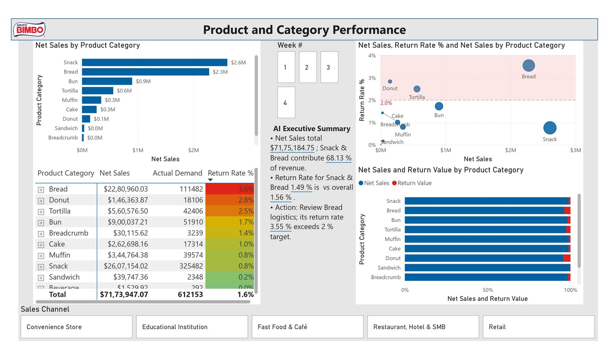
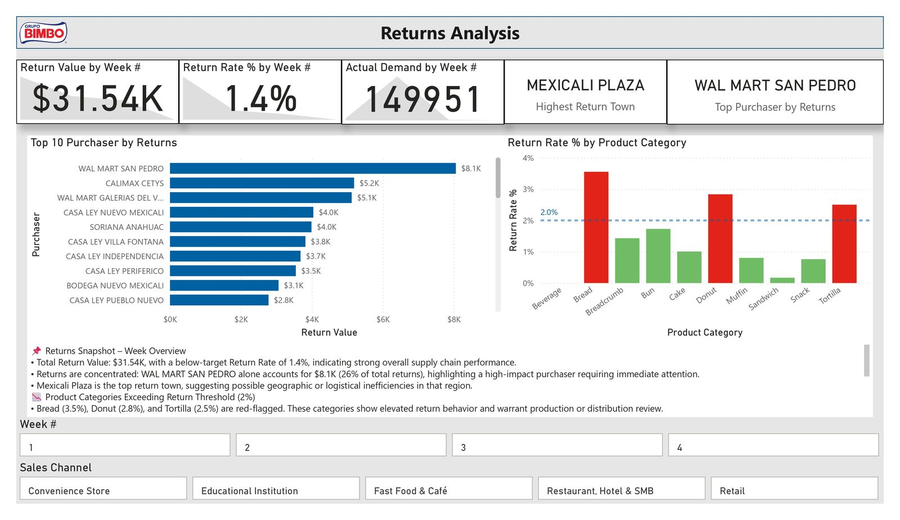

Power BI dashboard
Retail Sales & Returns Analysis
A six-page sales, margin and returns dashboard on a star-schema model, with DAX time intelligence and drill-through pages.
- Power BI
- DAX
- Power Query
- Star schema
- Full report (PDF) →
Independent portfolio project. Not affiliated with or endorsed by Grupo Bimbo.
- 6
- linked report pages
- 4
- headline KPIs on the overview
- 10
- product categories compared

Problem
A retail business needs to see sales growth and returns side by side: which product categories, channels and stores drive revenue, and where returns eat into it.
Data
Weekly sales, demand and returns data by product category, sales channel, purchaser and town, modelled as a star schema in Power BI.
What I built
A sales, margin and returns dashboard across six linked pages:
- Executive overview: net sales, gross sales, demand and return rate, with weekly trend
- Product and category performance
- Geographical sales and returns
- Purchaser analysis
- Returns analysis
- AI insights: a Key Influencers view of what drives returns
DAX time-intelligence measures drive the trends, and drill-through pages take the reader from a category or store down to its detail.
Explore the data
Switch the measure to see the story changeProduct categories
Net sales, demand and return rate by category, from the Product and Category Performance page.
On return rate, bars past the dashed line are above the 2% target.
View as a table
| Category | Net sales | Demand | Return rate |
|---|---|---|---|
| Snack | $2,607,154.02 | 325,482 | 0.8% |
| Bread | $2,280,960.03 | 111,482 | 3.6% |
| Bun | $900,037.21 | 51,910 | 1.7% |
| Tortilla | $560,576.50 | 42,406 | 2.5% |
| Muffin | $344,764.38 | 39,574 | 0.8% |
| Cake | $262,698.16 | 17,314 | 1.0% |
| Donut | $146,363.87 | 18,106 | 2.8% |
| Sandwich | $39,747.36 | 2,348 | 0.2% |
| Breadcrumb | $30,115.62 | 3,239 | 1.4% |
| Beverage | $1,529.92 | 292 | 0.0% |
Data model
Power BI star schemaOne fact table at week-by-product-by-purchaser grain; every page and measure reads from the same model.
The DAX
Measures behind the reportBase measures. Every visual builds on a handful of explicit measures over the sales fact table, so a number means the same thing on every page.
Gross Sales =
SUM ( Sales[Gross Sales] )
Return Value =
SUM ( Sales[Return Value] )
Net Sales =
[Gross Sales] - [Return Value]
Actual Demand =
SUM ( Sales[Demand Units] )
Return Rate % =
DIVIDE ( SUM ( Sales[Returned Units] ), [Actual Demand] )Time intelligence. The data runs week by week, so the trend compares each week with the one before it, ignoring any other date filter.
Net Sales Prior Week =
VAR CurrentWeek = MAX ( 'Date'[Week Number] )
RETURN
CALCULATE (
[Net Sales],
REMOVEFILTERS ( 'Date' ),
'Date'[Week Number] = CurrentWeek - 1
)
Net Sales WoW % =
VAR PriorWeek = [Net Sales Prior Week]
RETURN
IF (
NOT ISBLANK ( PriorWeek ),
DIVIDE ( [Net Sales] - PriorWeek, PriorWeek )
)Business rules. The 2% return-rate target drives the red flags on the category pages, and the ranking follows whatever the report is filtered to.
Return Rate Target = 0.02
Return Rate Status =
IF (
[Return Rate %] > [Return Rate Target],
"Above target",
"Within target"
)
Category Rank =
RANKX (
ALLSELECTED ( Product[Category] ),
[Net Sales],
,
DESC,
DENSE
)
Snack and Bread Share =
DIVIDE (
CALCULATE ( [Net Sales], Product[Category] IN { "Snack", "Bread" } ),
CALCULATE ( [Net Sales], ALLSELECTED ( Product[Category] ) )
)One visual, three breakdowns. The Parameter buttons on the overview swap the chart between sales channel, purchaser and product category.
Breakdown =
{
( "Sales Channel", NAMEOF ( Channel[Sales Channel] ), 0 ),
( "Purchaser", NAMEOF ( Purchaser[Purchaser] ), 1 ),
( "Product Category", NAMEOF ( Product[Category] ), 2 )
}What changed
What the analysis showsSnack and Bread bring in most of net sales.
Bread, Donut and Tortilla are the categories whose return rates sit above the 2% threshold.
Returns are concentrated in a small number of purchasers.
Gallery
Select an image to enlarge
